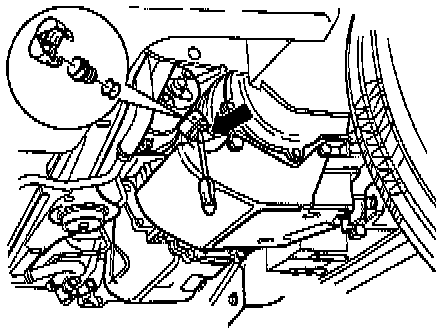

Fluid - A/T: Service and Repair
ATF, Replacing
- Place container under transmission.

- Remove ATF level plug from transmission oil pan.

- Remove overflow pipe (2) through level hole.
- Drain ATF.
- Install overflow pipe.
- Screw level plug in hand-tight.

- Fill with 3 liters of ATF through filler pipe using V.A.G 1924.
- Start engine and shift through all selector lever positions with vehicle stationary.
- Check and top up ATF level, Testing and Inspection